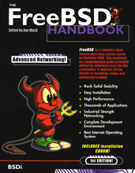
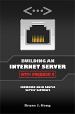
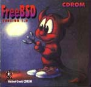
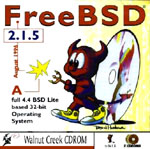
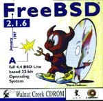
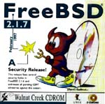
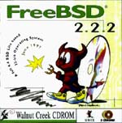

FreeBSD 関連の出版物
 |
FreeBSD ハンドブック には、 かなり長い 文献 があります。
書籍
 |
細川 達己氏らによる書籍です。 発売時には「ビル・ゲイツ 未来を語る」(原題 "The Road Ahead") を上回る売れ行きを記録し、 日本のコンピュータ関係の書籍のベストセラーとなりました (彼の本が 2 位、この本が 1 位です)。 |
 |
"FreeBSD お気楽極楽インストール" です。 2.0.5 が附属しています |
 |
"FreeBSD 入門キット" です。 2.0.5 が附属しています。 |
 |
これが BSDi の "FreeBSD Complete" です。インストールガイド、 マニュアルおよびインストール CD 2 枚から構成されています。 |
 |
この本は (1997 年はじめに) 台湾で出版されたものです。 タイトルは "FreeBSD: 入門と応用" で、 著者は李 建達氏です。 |
 |
これは蕗出版の "はじめての FreeBSD" です。 一般的なインストールガイドや日本語環境のほか、システム管理や (ブートプロセス等のような) 下位レベルの情報に重点を置いています。 FreeBSD-2.2.2R と XFree86-3.2 が CDROM に収録されています。 264 ページ、3,400 円です。 |
 |
ASCII の "パーソナル Unix スターターキット - FreeBSD" です。 UNIX® の歴史、日本語文書処理システムの構築ガイドや ports の作り方についても書かれています。2.1.7.1R と XFree86-3.2 が CDROM に収録されています。384 ページ、3,000 円です。 |
 |
M. Schulze、B. Roehrig、M. Hoelzer und andere による、 BSD mit Methode です。C&L Computer und Literatur Verlag から 1998 年に発行されました。850 ページ。2 枚の CDROM に、FreeBSD 2.2.6、 NetBSD 1.2.1 と 1.3.2、OpenBSD 2.2 と 2.3 が収録されています。98 ドイツマルク。 |
 |
毎日コミュニケーションズの、 "FreeBSD インストール&活用マニュアル" です。 日本のユーザーグループ監修による、インストールから トラブルシューティングを含む活用法までの FreeBSD 総合入門です。 2.2.7-RELEASE、FreeBSD(98)2.2.7-Rev01、PAO、distfiles が CDROM に 収録されています。472 ページ、3,600 円です。 |
 |
日本のユーザーグループによるマニュアルページの翻訳プロジェクト、 "jpman プロジェクト"の監修による、"FreeBSD ユーザーズ リファレンスマニュアル" です。毎日コミュニケーションズから出ています。 FreeBSD マニュアルページのセクション 1 の日本語版です。 2.2.7-RELEASE、FreeBSD(98)2.2.7-Rev01、PAO が CDROM に収録されています。1,040 ページ、3,800 円です。 |
 |
日本のユーザーグループによるマニュアルページの翻訳プロジェクト、 "jpman プロジェクト"の監修による、"FreeBSD システムアドミニストレーターズマニュアル"です。 毎日コミュニケーションズから出ています。 FreeBSD マニュアルページのセクション 5 と 8 の日本語版です。 756 ページ、3,300 円です。 |
 |
Youngjin.com による "About FreeBSD" です。 韓国最初の FreeBSD の本であり、 インストールからハングル環境などのトピックを含んでいます。 3.5.1-RELEASE/PAO と 4.1-RELEASE を含む 3 枚の CDROM からなり、788 ページ、26,000 ウォンです。 |
 |
Onno W Purbo, Dodi Maryanto, Syahrial Hubbany, Widjil Widodo: FreeBSD によるインターネットサーバの構築 (インドネシア語)、 Elex Media Komputindo、 による 2000 年の出版。 |
|  | FreeBSD Handbook 1st Edition は、詳しく書かれた FreeBSD のチュートリアルとリファレンスです。 インストール、FreeBSD の運用など、さまざまな内容が含まれています。 2000 年 4 月, BSDi. ISBN 1-57176-241-8 |
 |
Complete FreeBSD with CDs の第三版、FreeBSD 4.2。 今まで知りたかった、あなたのコンピュータで FreeBSD を実行する方法についてのすべてがここに。 FreeBSD を含む 4 枚の CD 付き ! 発売: 2000 年 11 月 ISBN: 1-57176-246-9 |
 |
FreeBSD Handbook 2nd Edition は、詳しく書かれた
FreeBSD のチュートリアルとリファレンスです。
インストール、FreeBSD の運用など、さまざまな内容が含まれています。 2001 年 11 月, Wind River Systems. ISBN 1-57176-303-1 |
 |
"FreeBSD ネットワーク管理ガイド" Mittelstaedt, Ted.
Addison Wesley, 2000. この本は 2 刷あり、第 1 刷には FreeBSD 4.2 の disc 1 が、第 2 刷には FreeBSD 4.4 の disc 1 がついています。400 ページ。2001 年に 日本語訳が出版されました。 ネットワーク管理ガイドは、代表的な企業ネットワークへの FreeBSD の導入を、特に Windows 95/98/ME/NT/2000 との相互運用に力点をおいて扱っています。 英語版: 2000, Addison Wesley. ISBN 0-201-70481-1 日本語訳: 2001, ピアソン・エデュケーション. ISBN 4-89471-464-7 |
 |
"FreeBSD, An Open-Source Operating System for Your Personal Computer",
Annelise Anderson. FreeBSD にも UNIX にも馴染みがないユーザ向けの FreeBSD 入門書です。 この本には FreeBSD 4.4R のインストール CD-ROM が収録されおり、 システムおよびサードパーティソフトウェアのインストール、音声、X Window、ネットワークおよびプリンタをどのように動かすか、 カスタムカーネルのビルドと更新といったことについて知りたいことが網羅されています。 第 2 版. 2001 年 12 月, The Bit Tree Press. ISBN 0-9712045-1-9 |
 |
Absolute BSD. この本は、高性能なエンタープライズ環境における FreeBSD ベースのサーバー管理について論じています。 2002 年 6 月, No Starch Press. ISBN 1-886411-74-3 |
 |
Fultus は
FreeBSD Open Documentation Library を公開しています。
これは、Fultus の
eLibrary の技術文書部門、
および Fultus Online Book
Superstore
にて、以下の形式で
オンライン
で提供されている完全な最新の FreeBSD 文書コレクションです。
FreeBSD eBooks の説明を読んで、 Fultus web サイトの FreeBSD ドキュメント ページにあるサンプルをダウンロードしてください。 |
|  | "Building an Internet Server with FreeBSD 6" は、 FreeBSD のインストールや最新のインターネットサーバアプリケーションの設定を最短の時間で行うための step by step ガイドで、新しいユーザや経験者を対象としています。 このガイドには、インターネット上の評判の良く、広く採用されている数多くのオープンソースプロジェクトについて、 そして、それぞれの実装の詳細な手順、インターネットサーバを維持するための重要な作業について書かれています。 2006 年 5 月, Lulu Press, ISBN 1411695747, 228 ページ |
 |
EnderUNIX の専門家と Huseyin Yuce が書いたこの本は、
トルコ語による FreeBSD に関する初めての本です。この本は、
acikkod publications
出版社から出版されており、このページ
から購入できます。
書誌事項は以下のとおりです。 ISBN: 975-98990-0-0 出版: 2004年2月 ペーパーバック: 504 ページ CD: FreeBSD 4.9 インストール CD 著者: Hüseyin Yüce, İsmail Yenigül, Ömer Faruk Şen, Barış Şimşek and Murat Balaban. 目次 (トルコ語) |
 |
Emmanuel Dreyfus による Les cahiers de l'Admin: BSD (BSD 管理者ノート) は、BSD システム向けのさまざまな UNIX® 管理の話題を扱っています。BSD システム管理の初心者および中級者向けです。 フランス語で書かれています。Eyrolles, 2004. ISBN 2-212-11463-X |

|
The OpenBSD PF Packet Filter Book は、PF パケットフィルタスイート、 ALTQ, spamd, アドレス変換、そして FreeBSD, NetBSD, OpenBSD, および DragonFly について扱っています。2006 年 8 月, Reed Media Services. ISBN 978-0-9790342-0-6. |

|
FreeBSD 6 Unleashed は、FreeBSD の持つ能力を最大限に利用するために知る必要のあるすべてのことを扱っています。 2006 年 6 月 7 日, Sams. ISBN 0-672-32875-5 |

|
(繁体字で書かれた FreeBSD 6.0 の本) 2005 年 12 月, Drmaster. ISBN 9-575-27878-X |

|
このルーマニア語による本は、FreeBSD の最初の一歩を踏みだすために有用な本です。 インストール、FreeBSD システムの毎日の作業、 FreeBSD のユーティリティの実際の使用に関する具合的な例について扱っています。 FreeBSD をサーバおよびルータとして利用するための 2 つのケーススタディが書かれています。 2005, Polirom Publishing House, ISBN 973-681-683-4 |
 |
The “RadioBSD Crier: 2007/01” は 24 ページの記事で、 FreeBSD および NetBSD の IPFW, IPFW2 そして IP6FW ファイアウォールについて書かれています。 |

|
Dru Lavigne による The Best of FreeBSD Basics には、 FreeBSD の幅広い領域をカバーする 100 近いチュートリアルやオープンソースの Unix に関するトピックが書かれています。 2007 年 12 月, Reed Media Services. ISBN 978-0-9790342-2-0. |
{kind=link}
CDROMs
最近のリリースについては FreeBSD リリース情報のページを参照してください |
これは InfoMagic の BSDisc で、FreeBSD 2.0 と NetBSD 1.0 を 1 枚の CD に収録したものです。私が持っている中では、表紙に絵が 描かれているのは これ 1 枚だけです。 |
 |
これがカリフォルニア大学バークレイ校によるオリジナルの 4.4 BSD Lite2 リリースで、FreeBSD のかなりの部分を支える中心技術です。 |
 |
LASER 5 の "BSD" シリーズの最初のものです。FreeBSD-2.0.5R、 NetBSD-1.0、XFree86-3.1.1 および FreeBSD(98) カーネルが収録されています。 |
 |
LASER 5 の "BSD" シリーズの 2 枚目のものです。このバージョンから 通常の CD ケースにパッケージングされるようになりました。FreeBSD-2.1R、 NetBSD-1.1、XFree86-3.1.2 と 3.1.2A および FreeBSD(98) カーネル (2.0.5) が収録されています。 |
 |
LASER 5 の日本語版 FreeBSD CDROM です。 CD 4 枚組です。 |
 |
パシフィックハイテック (PHT) の製品ラインが Walnut Creek CDROM に統合される前に PHT が発行した唯一の FreeBSD の CD です。 PHT は現在 FreeBSD/J (日本語版) CD も発行しています。 |
 |
韓国の雑誌の付録 CD の表紙です。 独創的な絵の描かれた表紙に御注目 ! この CD には FreeBSD 2.2.1 release とローカルな拡張がいくつか収録されています。 |
|  | これこそが ! 実に初めて発行された FreeBSD の CD なのです ! FreeBSD プロジェクトと Walnut Creek CDROM 両者の若かりし頃の作 品なので、現在の製品との品質の違いを見つけるのは、 おそらくあまり難しくないことでしょう。 |
 |
これは Walnut Creek CDROM から発行された 2 枚目の FreeBSD の CD で、 1.x ブランチの最後の CD でもあります (USL/ノベル との訴訟と和解を 参照)。ついでリリースされた FreeBSD 1.1.5 はネットワーク上でしか 入手することができませんでした。 |
 |
この珍しい CD は、現存する見本のほぼすべてが組織的に追跡され 廃棄されたため、現在ではちょっとしたコレクターズアイテムに なっています。この CD の図版の不幸な点は、作成年が間違っていることと、 さらにバツの悪いことに、背中の "January" まで "Jaunary" と間違って つづられていることです。ああ、見本市に向けて出発するほんの数時間前に 図版を変更するという冒険を試みるんじゃなかった。 |
 |
これが修正版の FreeBSD 2.0 の CD です。修正版では (多少風変わりではありますが)、色彩までもが変更されていることに御注目。 おそらく この変更は、以前の失敗作と区別するために おこなわれたものでしょう。 |
 |
FreeBSD 2.0.5 release の CD です。これは細川 達己氏のデーモン君を 初めて表紙に使用した CD です。 |
 |
FreeBSD 2.1 release の CD です。これは (2.1.7 が最後となる) 2.1 ブランチの最初の CD リリースです。 |
|  | FreeBSD 2.1.5 release の CD です。 |
|  | FreeBSD 2.1.6 release の CD です。 |
 |
WC から発行された、最初で最後の 2.1.6 の日本語ローカライズ版です。 今後この種の製品に関しては、パシフィックハイテックおよび LASER 5 の後援を受けた、細川 達己氏のひきいるチームに責任が移転されます。 |
|  | これは FreeBSD 2.1.7 release の CDで、2.1.x ブランチの最後の CD リリースでもあります。2.1.6 のセキュリティ対策を主な目的としてリリースされたものです。 |
 |
2.2 スナップショットの早期リリース (2.2.1 のリリース以前に おこなわれたもの) です。 |
 |
FreeBSD 2.2.1 release の CD です。これは 2.2 ブランチの最初の CD です。 |
|  | FreeBSD 2.2.2 release の CD です。 |
 |
FreeBSD 3.0 スナップショットの CD です。 |
 |
FreeBSD メーリングリストとニュースのアーカイブです。 スレッド毎に少し整理され、HTML に変換されています。 この製品の発行は 2 回おこなわれたあとで壁にぶち当ってしまいました。 というのはデータが多すぎて 1 枚の CD には入りきらないことが明らかに なったからです。おそらく DVD がもっと一般的になった時には...。 |
 |
FreeBSD Toolkit: あなたの FreeBSD 体験をより豊かなものにしてくれる 6 枚組のリソース CD。 |
 |
FreeBSD Alpha 4.2 - DEC Alpha 用 64 ビット UNIX オペレーティングシステム 完全版。 |
 |
FreeBSD 4.2: PC 用 32 ビット UNIX オペレーティングシステム完全版。 |
 |
FreeBSD 4.2 CD-ROM。Lehmanns CD-ROM 版。 2001 年 1 月、CD-ROM 4枚組。Lehmanns Fachbuchhandlung。ドイツ。 ISBN 3-931253-72-4。 |
 |
FreeBSD 4.3 RELEASE CDROM. 2001 年 4 月, Wind River Systems. ISBN 1-57176-300-7. |
 |
FreeBSD Toolkit: FreeBSD をもっと便利にする 6 枚組の CD セット 2001 年 6 月, Wind River Systems. ISBN 1-57176-301-5. |
 |
FreeBSD 4.4 CD-ROM。Lehmanns CD-ROM 版。 2001 年 11 月、ジュエルケース CD-ROM 6枚組。 Lehmanns Fachbuchhandlung。 ドイツ。 ISBN 3-931253-84-8。 |
 |
FreeBSD 4.4 RELEASE CDROM. Wind River Systems. 2001 年 9 月. ISBN 1-57176-304-X. |
 |
FreeBSD 4.5 RELEASE CDROM. 2002 年 2 月, FreeBSD Mall Inc. ISBN 1-57176-306-6. |
{kind=link}
{kind=link}
{kind=link}
{kind=link}
{kind=link}
雑誌
| 韓国の UNIX 雑誌 1997 年 5 月号の表紙です。 付録 CD にFreeBSD 2.2.1が収録されています。 | |
 |
UNIX User 誌 1996 年 11 月号です。 付録 CD に FreeBSD 2.1.5 が収録されています。 |
 |
Software Design 誌 1997 年 4 月号の "FreeBSD フルコース" 特集 (技術評論社発行) です。 インストールから -current の追いかけ方までのすべてをカバーした FreeBSD の記事が 80 ページにわたって掲載されています。 |
 |
Sm@rt Reseller Online の 1998 年 9 月号に掲載された Brett Glass の Quality Unix for FREE です。 |
 |
株式会社 ASCII から発行された世界初の BSD 専門誌 "BSD magazine"。 BSD magazine は FreeBSD, NetBSD, OpenBSD, BSD/OS を扱っていて、 BSD の歴史、インストール、ports/packages の特集記事が組まれています。 また、FreeBSD 3.2-RELEASE, NetBSD 1.4.1, OpenBSD 2.5 が収録された 4 枚の CDROM が添付しています。 |
{kind=link}